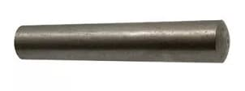
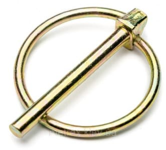
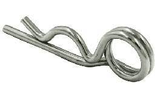
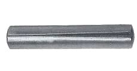
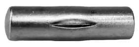
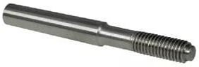
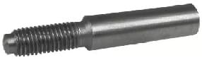
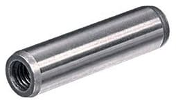
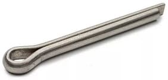

Штифты, шплинты
27 типов изделий в категории.

ART 88023 Шплинт трубный с полукольцом

DIN 1 B / ISO 2339 Штифт конический

DIN 11023 Шплинт быстросъемный с кольцом

DIN 11024 D шплинт пружинный игольчатый

DIN 11024 E шплинт пружинный игольчатый

DIN 1444 B штифт цилиндрический с головкой

DIN 1471 / ISO 8744 штифт конический с насечками

DIN 1472 / ISO 8745 штифт конический с насечками

DIN 1473 / ISO 8740 штифт цилиндрический

DIN 1474 / ISO 8741 штифт забивной цилиндрический

DIN 1475 / ISO 8742 штифт цилиндрический

DIN 1476 / ISO 8746 штифт с полукруглой головкой

DIN 1477 штифт с потайной головкой

DIN 1481 / ISO 8752 штифт пружинный разрезной

DIN 258 штифт конический с резьбовой цапфой

DIN 6325 штифт цилиндрический закалённый

DIN 7 / ISO 2338 штифт цилиндрический

DIN 7343 / ISO 8750 штифт спиральный цилиндрический

DIN 7344 / ISO 8748 штифт спиральный

DIN 7346 / ISO 13337 штифт пружинный

DIN 7977 штифт конический

DIN 7978 штифт конический с внутренней резьбой

DIN 7979 Штифт цилиндрический с внутренней резьбой

DIN 94 шплинт разводной

ГОСТ 3128-70 Штифт цилиндрический

ГОСТ 397-79 шплинт